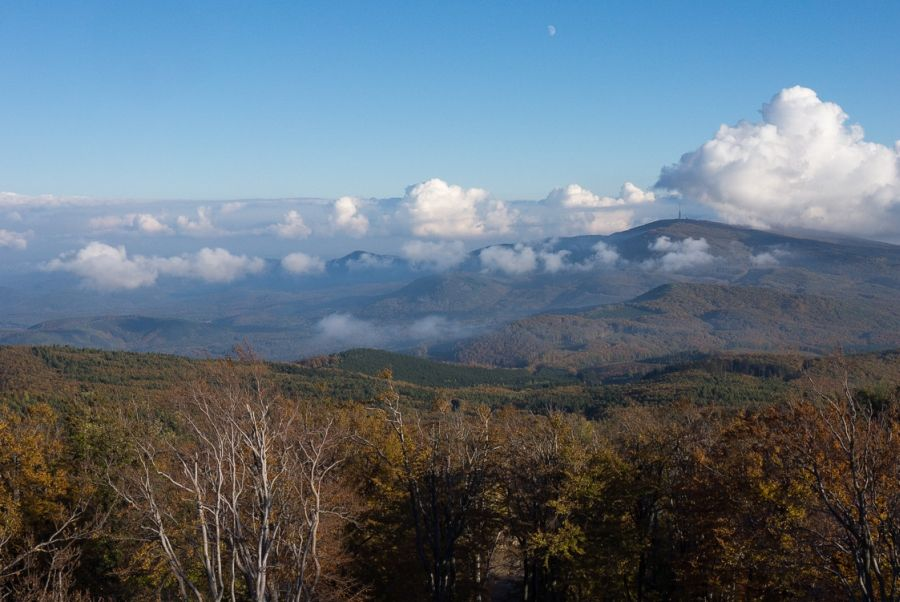
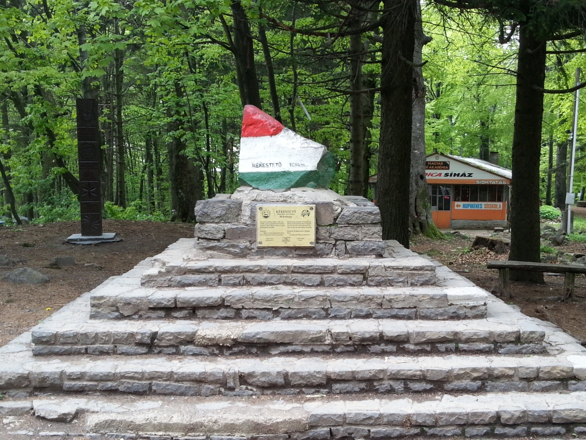
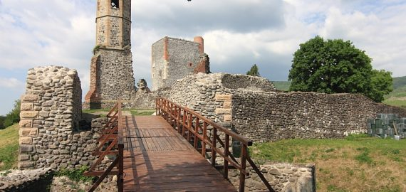

Elhelyezkdés:
A Mátra az Északi-középhegység egyik, vulkanikus eredetű tagja, amely 900 négyzetkilométeren terül el a Cserhát és a Bükk-vidék között. Itt található a mai Magyarország két legmagasabb hegycsúcsa, a Kékes (1014 m) és a Galya-tető (965 m). A Mátra Magyarország észak-keleti részében, Heves megyében található. A vulkanikus eredetű hegység az Északi középhegység egyik tagja, illetve a Kárpátok vulkáni övezetének is része. Keletről a Cserhát hegység, nyugatról a Bükk vidék és hegység határolja. Területe több mint 900 négyzetkilométert fed le.
Látnivalók:
Kékes és Kékestető
A Mátrában található a magyarországi 100 legmagasabb csúcsnak több mint a negyede. Nem meglepő tehát, hogy Magyarország legmagasabb pontja a Kékes is itt alakult ki. A Kékes a maga 1014-méterével évente több ezreket csalogat egy kis erdei túrázásra vagy pusztán a hegycsúcsról elterülő panorámájával. Ha a Mátrába látogatsz, a Kékest mindenképpen érdemes felkeresni. A hegycsúcs autóval és tömegközlekedéssel is könnyedén megközelíthető. As csúcson található egy tévétorony, ahonnan körpanorámás kávézóból lehet csodálni a tájat. Illetve, több erdei útvonal vagy nehezebb túraútvonal is indul innen, többek között az Országos Kéktúra 21-es szakasza. Ha a Kékes körül túrázol, akkor érdemes még a piros jelzésű útvonalon is elbarangolni a Mátra délebbi részébe, mivel itt egy kis kitérővel eljuthatsz a 960 méter magasan fekvő Disznó kúthoz, ami Magyarország legmagasabban fakadó forrása. A Kékesről és az itt található túraútvonalakról, szabadidős lehetőségekről már egy korábbi cikkben írtam, amit érdemes megnézned, ha a Kékesen töltenél el egy napot, vagy hosszúhétvégét. Kékes, Kékestető, Mátra
Sás tó
Közép-Mátrában található Magyarország legmagasabban fekvő tava, a Sás tó. A tó a Kékestől nem messze, déli irányba, 510 méteren fekszik. A mesterséges tó körül egy egész kis üdülőfalu alakult ki, ami fantasztikus úti cél, ha egy romantikus hétvégét szeretnél eltölteni. Ilona völgyi vízesés A Kékestől nem messze, akár erdei úton is megközelíthető az Ilona völgyi vízesés. Ez a vízesés Magyarország legnagyobb szintkülönbséggel rendelkező természetes zuhataga. Az Ilona patak vize a Mátra kőtengerei között csobog végig az Ilona völgyben, majd pedig 10 méter magasból zúdul le. ⦁ Magasság: 10 m ⦁ Kiinduló pont: Szent István kút ⦁ Időtartam: 1 - 2 óra ⦁ Túratáv: 2 km A Kékestől indulva bükkerdőkön és tereplépcsőkön keresztül, hatalmas sziklafalak mellett elhaladva, a Kéktúra jelzést követve, majd pedig a zöld útra letérve, pár óra alatt el lehet jutni a vízesésig. Autóval pedig Parádfürdő utáni, Szent István kútig érdemes menni, ahonnan egy könnyed, 2 km hosszú útvonalon lehet eljutni a vízesésig. Ilona patak és Ilona vízesés, Mátra
Tarjánka szurdok
A Tarjánka szurdok azon kevés magyarországi kirándulóhelyek egyike, amit vízfolyás vájt, és jelenleg látogatható kirándulóhely. Ezért, ha a Mátrában jársz és szeretnél az erdei sétáknál és útvonalaknál valamivel izgalmasabbak, akkor ezt mindenképpen vedd fel a listádra! A Tarjánka-szurdok Markaz és Domoszló között húzódik és mindössze 750 méter hosszú. Azonban a szurdokon való átjutás egy életre szóló élmény mindenki számára. A terület látogatása csak szervezett keretek között lehetséges, mivel a szurdok tájvédelmi értéke hatalmas, és ráadásul a szurdokban való közlekedés balesetveszélyes. A túrákat a Bükki Nemzeti Park szervezi, amiknek az időpontjáról itt tudsz tájékozódni és időpontot is foglalhatsz.
Károlyi kastély és Parádsasvári üveggyár
A Mátra északi részében barangolva már nem csak természeti csodákat nézve ámulhatsz, hanem hatalmas kastélyok, múzeumok és még üveggyár is található itt. Parádsasvár és Parádfürdő nagyon népszerű megálló a Mátrába látogatók körében. A 19. századi Károly kastélyt luxus szállodává alakították. Ettől nem messze pedig a Parádi Üvegmanufaktúra látogatható, ahol kézzel készült üvegtermékeket készítenek. Ráadásul, ha odalátogatsz, akkor te is kipróbálhatod milyen az üvegfújás és a végén akár a saját poharaddal is távozhatsz.
Galyatető és Galya-tető
Galya-tető és Galyatető nem összekeverendő! A Galya-tető Magyarország harmadik legmagasabb csúcsa a maga 964 méterével. Galyatető pedig a csúcstól nem messze kialakult településnek a neve. Galya tetőtől nem messze található az Ágasvár, ahova a Mátra-bércen keresztül hódíthatsz meg. ⦁ Galya-tető csúcs (964m) ⦁ Galyatető város Péter-hegyese kilátó képek Galya-tetőn 1934-ben építették meg a Péter hegyese kilátót, ami szintén az Országos Kéktúra egyik pontja. Ágasvár Ágasvár a Nyugati-Mátra egyik leglátványosabb pontja, ahol korábban vár állt, aminek mára azonban alig maradt nyoma. A várat még a 12. században építették és védelmi szempontból fontos funkciót töltött be a középkorban. A vár 788 méteren helyezkedik el, ahonnan tovább haladhatsz a Mátra-bércen keresztül a Nyugati-Mátra legszélső pontjáig. Ágasvár Mátraszentimréről is megközelíthető. A vélemények alapján ez a Mátra egyik leglátványosabb túrája. Mátraszentimréről indulva, a Vörös-kő kilátón át, fel Ágasvárig, majd pedig a Csörgő-patak völgyében visszaereszkedve, nagyjából 5-6 óra alatt teljesíthető az út. Ágasváron találod a Mátra egyik legnépszerűbb természetes kilátópontját. Galyatető, Mátra
Mátrai Ásványház és Múzeum
Galya-tetőtől nem messze, közvetlenül a Mátraszentistváni sípark alatt van található a Mátrai ásványház és múzeum. A hely különlegessége, hogy nem csak kiállításon lehet megtekinteni az ásványokat és kőzeteket, hanem tartozik hozzá egy ásványcsiszoló műhely is. Itt kipróbálhatod, hogyan kell az aranyat mosni, kettévághatod a saját választott ásványodat vagy akár meg is csiszolhatod. Ezen felül pedig olyan programokon vehetsz részt, mint: ⦁ Ásvány bemutató ⦁ Csiszoló műhely ⦁ Aranymosás ⦁ Kincs keresés ⦁ Ásványgyűjtő túrák
Szereted az állatokat? Akkor ezt is olvasd el: Magyarország összes vadasparkja
Sport és más szabadidős programok a Mátrában A Mátrában a természetjáráson kívül is rengeteg lehetőség van. Ha passzív pihenésre vágysz, akkor érdemes felkeresnek valamelyik gyógyfürdőt és wellness szállót. A mátrai kis faluk tavasztól-nyárig teli vannak élettel és programokkal. Egymást érik a búcsúk, hegyi biciklisversenyek, szervezett éjszakai túrák, stb. Ezekről mindig érdemes előre tájékozódni.
A Mátra hazánk egyik legnépszerűbb túrahelye, köszönhetően a Kékesmek, amely Magyarország legmagasabb pontja. Ám ezenkívül sokféle szórakozási, kulturális és természeti programot rejt! A Mátra az Északi-középhegység egyik, vulkanikus eredetű tagja a Cserhát és a Bükk között. Itt található a mai Magyarország két legmagasabb hegycsúcsa, a Kékes (1014 m) és a Galya-tető (965 m). A 100 legmagasabb magyar hegycsúcs között 26 mátrai található, ezzel a 2. helyezett átlagmagasságban a Bükk-vidék után
Kékes
A Mátra és Magyarország legmagasabb pontja, ahol egy TV-torony is áll kilátóként funkcionálva. A csúcspontot egy nemzeti színűre festett kő jelképezi. A 180 m magas torony egyik szintjén zárt körpresszó működik, felette, 45 m magasan nyitott kilátószinttel. Autóval is könnyen megközelíthető, Mátraházánál a Kékestetői úton a kilátó alatti parkolóig fel lehet menni. A csúcson az Országos Kéktúra is áthalad.
Ilona-völgyi vízesés
Magyarország legnagyobb szintkülönbségű természetes zuhataga, a mesterségesen kialakítottak közül pedig csak a Lillafüredi-vízesés magasabb nála. Az Ilona-völgyben, az Ilona-patak mentén található. Parádfürdőről lehet legkönnyebben megközelíteni, a zöld sáv, majd a zöld kör jelzésen 5 km gyalog.

Kisnánai vár
A Mátra délkeleti részén lévő falu vára, a magyar nemesi rezidenciák egyik legszebb, késő középkori emléke. Nemrég teljes felújításon esett át. Ennek során megerősítették a falakat, az Öreg-toronyban kiállítótermeket hoztak létre, a tetején egyedülálló panorámával, toronyterasz létesült. A vár tövében, 1880-90 között épült szlovák parasztház. A tájház berendezési tárgyaival, a korabeli paraszti életet mutatják be.
Élővilága:
A Mátra legnagyobb emlõsei a szarvas, õz , a vaddisznó, a róka és a betelepített muflon. Számos kisebb emlõsfaj egyedeit megtaláljuk az erdõk mélyén és a szegélyterületeken. Ritkán találjuk meg a védett nyuszt, nyest, a vadmacska és a borz egy-egy képviselõjét. Az egyre fogyatkozó öreg erdõk, a növekvõ üdülési és túristaforgalom miatt a ragadozó madarak kevés fészkelésre alkalmas területet találnak. A hegyek közé szorult falvakat körülvevõ erdõkben találunk néhány pár galambász-héját, egerész- és darázsölyv fészket. A közép- és nyugat Mátra kevéssé zaklatott helyein megtaláljuk a császármadarakat. Egy-két állandó folyású hegyi patak mentén még hegyirigó párok is fészkelnek. A Mátra madárvilágához tartozik a holló, a macskabagoly, a fekete harkály, a kék galamb, a királyka, a légykapó és a léprigó számos példánya. Ritka kétéltû és hüllõ fajai a Mátrai TVK-nek a sárgahasú unka, a gyepi béka, az alpesi gõte és a faligyík. Galyatetõ és a NY-i Mátra térségében gazdag lepkefaunával találkozhatunk. Különösen értékes a hegység lepke-, szitakötő- és csigafaunája. A kevés számú barlangban igen sokszínű denevérfauna él.
A leggyakoribb gyógynövények a Mátrában:
Cserjék
⦁ A kökény Európában és hazánkban is gyakori gyógynövény. Ez a tüskés (tulajdonképpen tövises) cserje a szilva egyik rokona. magyar népies nevei: kökény, boronafa, koronafa, ekegúzs, kininfa, kökönye, tövisfa, zabszilva .Hegyoldalak, erdőszélek, cserjések, napfényes erdők növénye. Az 1-4 m magasra is megnövő cserje sötétszürke ágai hegyes tövisekben végződnek.
⦁ Csipkerózsa
A csipkebogyó a vadrózsa és a japán rózsa gyógyhatású áltermése, népies nevei: csipke, csitkenye, hecsedli, hecsepecs). A virág termését, a csipkebogyót akkor szedjük, ha már a dér megcsípte, a termés puhulni, ráncosodni kezd. Kiváló vitaminforrás, 100 g friss csipkebogyóhús 400 mg C-vitamin-t tartalmaz, amely a citroménak tízszerese, de A- B-, és ,P-vitamint, vasat és magnéziumot is tartalmaz. A C-vitamin részt vesz az oxidációs folyamatok szabályozásában, erősíti a vérerek falát, szilárdítja a kötőszövetet, fokozza a szervezet védekezőképességét, ellenállását a fertőzésekkel, betegségekkel szemben. Megelőzésként segíti a csontok erősödését, szilárdságát és a csontképződést.
Lágyszárúak
⦁ Medvehagyma
⦁ Az egyszikűek (Liliopsida) osztályának, spárgavirágúak (Asparagales) rendjébe, a hagymafélék (Alliaceae) családjába tartozó faj, egész Európában elterjedt, a nedves, árnyas erdőkben érzi jól magát. Hazánkban főleg a gyertyános, tölgyes vagy bükkös erdők aljnövényzetében nő tömegesen. Jellemzése A medvehagyma évelő növény. Fehér hagymájából két nagy, tojásdad, a végén kihegyesedő tőlevelet hoz. Virágrügyeit két hártyaszerű, barna buroklevél védi, amelyek kinyílva fehérek, háromszögletű tőkocsányon, tömött ernyőkben nyílnak. Három rekeszű toktermése van. Erősen fokhagymaillatú levelei, melyek kora tavasszal jelennek meg, a nyár közepére elszáradnak
⦁ Az orvosi tüdőfű
Nevezik pettyegetett tüdőfűnek, illetve dongófűnek is.Élőhelye:Üde, főként gyertyán- és bükkelegyes erdők. Európaszerte elterjedt. Hazánkban a domb- és hegyvidékeken gyakori. Magyarországon nem védett. Köptető, köhögéscsillapító hatású. Régen TBC ellen használták. A homeopátiás szerek és teakeverékek alkotórészeként légcsőhurut és tüdőasztma ellen használják.
☰ open